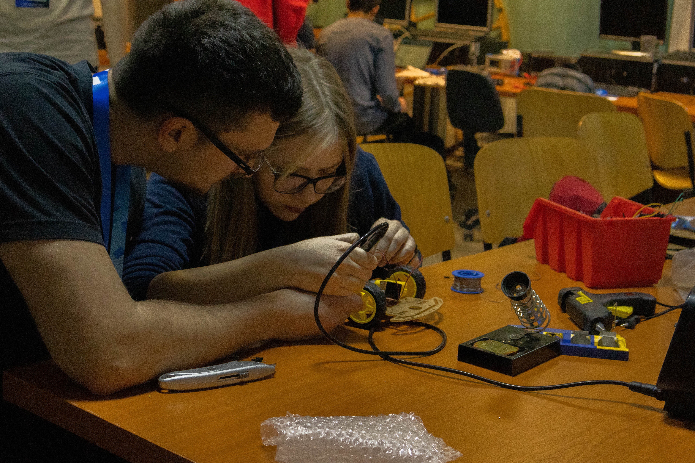
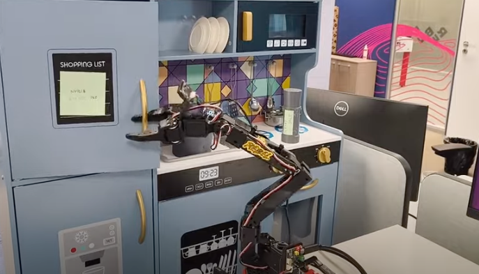
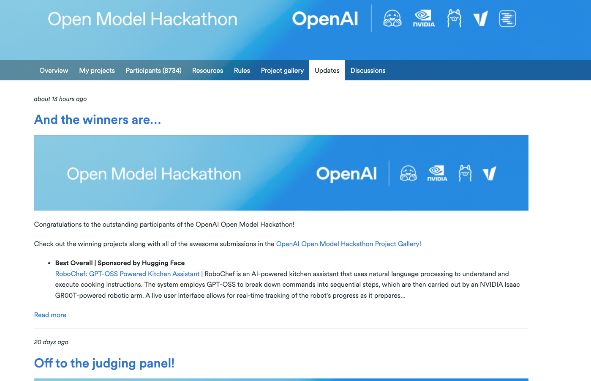

My First Year at RebelDot
A year ago, I walked into RebelDot for the first time as an intern — curious, slightly nervous, and very eager to learn. I had no idea that this place would end up shaping not just how I work, but how I think about technology, teamwork, and creativity.
Looking back, it's hard to summarize everything that's happened since. From building AI systems and speaking at events to winning hackathons and scanning historical monuments with drones — this first year has been intense, exciting, and deeply fulfilling.
üå± The Internship That Changed Everything
The internship was where it all started — three months of pure focus, learning, and hands-on experimentation. We weren't just following tutorials or working on throwaway exercises; we were building useful projects with actual, real-world applicability.
ü§ñ From Intern to AI Engineer
After the internship, I transitioned into a full-time AI Engineer role. That change marked the beginning of some of the most rewarding projects I've ever worked on.
This year's work has focused on bridging AI reasoning with real-world use cases — systems that people actually interact with. It's one thing to build a model that performs well in a notebook, and something completely different to see a person use it in real life and benefit from it.
That moment — when the first real user sent a message to something I helped build — was truly special.
ü߆ Experimenting, Learning, and Building
This year I also spent a lot of time experimenting with new tools and frameworks — especially AI-assisted coding environments like Cursor. What started as curiosity turned into a series of complete, deployed websites:
- voic.ro — my own website, where I document projects like this one
- landgame.ro — a racing simulator booking and leaderboard platform
- lantic.ro — a brochure website for a packaging company
- remarcdent.ro — a clean, minimal clinic site built for a client


Through these, I discovered how AI-assisted tools can dramatically speed up development while keeping full creative control. Each project was an exercise in architecture, design, and iteration — with AI as a true coding partner.
üèÜ Hackathons, Challenges, and Wins
Hackathons are a big part of my journey — they're where I test ideas fast, learn new things, and meet people who love technology as much as I do.
Over the last year, I've taken part in hackathons across Cluj, Bucharest, Oradea, and Budapest, and won the Embedded Challenge at iTEC Timișoara.
But the biggest highlight came with OpenAI's Open Model Hackathon, where my teammate Alex Luci and I won the Best Overall Project out of 8,700 participants worldwide. We built RoboChef, an AI-powered robotic assistant that turned natural language instructions into real physical actions. The experience combined everything I love — AI reasoning, robotics, and creativity.
 üöÄ Mentoring and Giving Back
One of the most fulfilling moments this year was being invited to mentor at NASA Space Apps Challenge Cluj-Napoca, the world's largest hackathon dedicated to space and Earth innovation.
Helping participants brainstorm, debug, and refine their ideas reminded me of how important mentorship is in tech — how much a single conversation can shift a project's direction or inspire confidence in someone just starting out.
üé§ Speaking at Noaptea Companiilor
Another memorable experience was representing RebelDot as a speaker at Noaptea Companiilor, where I had the chance to present on both nights of the event.
On the first night, I was part of AI_talks, where we discussed Vision-Language-Action models and showcased a live demo of NVIDIA's Isaac GR00T running on a real robot — the same concept that helped us win OpenAI's hackathon.
On the second night, I joined a panel discussion with RebelDot's leadership team, where we talked about the company, innovation, and emerging topics in AI like "AI-assisted coding." The discussions were open, honest, and full of great energy — the kind of conversations that make me proud to represent RebelDot.
üöÅ Drone Adventures and the Sphinx
Outside of RebelDot, I've continued my work in drone photogrammetry, a field I've loved for years. This year, I worked on several drone projects for industrial and creative applications, but one project stands above the rest — creating a 3D model of the Sphinx in Bucegi.
Using drones and high-resolution imagery, I reconstructed a digital version of the monument for a Netflix documentary, where I'll even make a short appearance explaining the scanning process. Seeing that combination of technology, art, and history come together was an unforgettable experience.
The scanning process involved multiple flights, capturing hundreds of high-resolution images from different angles to create an accurate 3D reconstruction of this iconic landmark.
Working on this project reminded me why I fell in love with drones in the first place — they allow us to see and preserve the world from perspectives that were impossible just a few years ago.
üìú In the Rebel Times
Somewhere along this year's adventures, I was also featured in Rebel Times, RebelDot's internal magazine. Being included there — among so many talented colleagues — was a moment of quiet pride. It reminded me that passion doesn't go unnoticed, and that sometimes, the little things you do out of curiosity can inspire others too.
üéì Certifications, Conferences, and Badges
This year I also completed six new certifications — four related to RebelDot projects (two AWS, one Azure, one Databricks) and two out of personal curiosity. On top of that, I attended conferences like Devtalks and participated in hackathons across the country.
I've started collecting all the badges from these events — each one representing a story, a new connection, or a new lesson learned.
✨ Reflections
This first year at RebelDot has been about much more than projects and milestones. It's been about people, curiosity, and the joy of building things that matter.
I've learned that consistency beats perfection, and that real growth happens when you show up, stay curious, and never stop creating. What makes this place special is how supportive everyone is — not just of the work I do at RebelDot, but also of the projects and passions I pursue outside of it. Whether it's drone photogrammetry, hackathons, or speaking at events, I've always felt encouraged to explore and grow in every direction.
Most of all, I've realized that I'm lucky — because the things I do here every day are things I'd happily do even if no one paid me to. Here's to another year of exploration, innovation, and building amazing things.